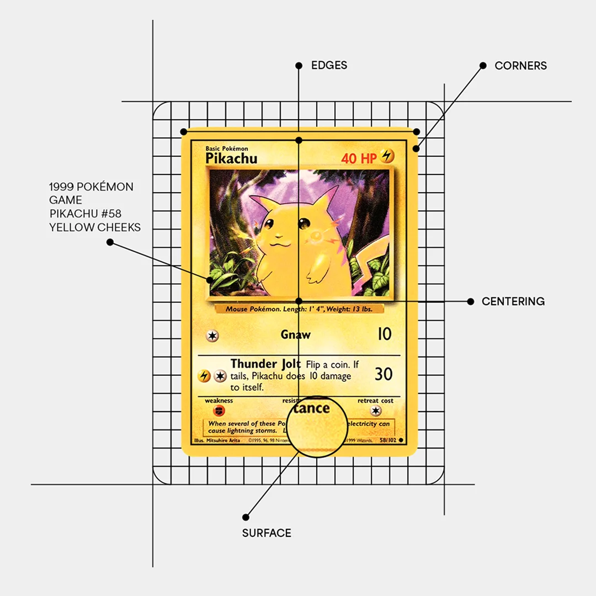
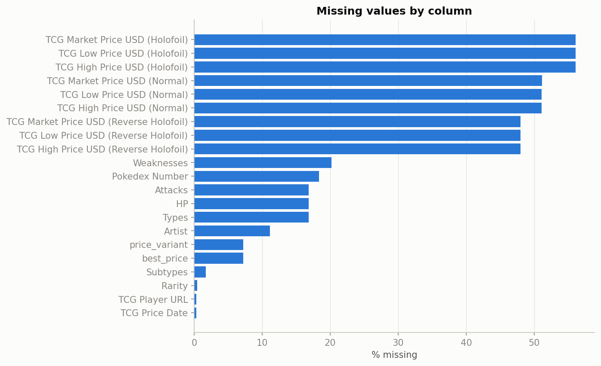
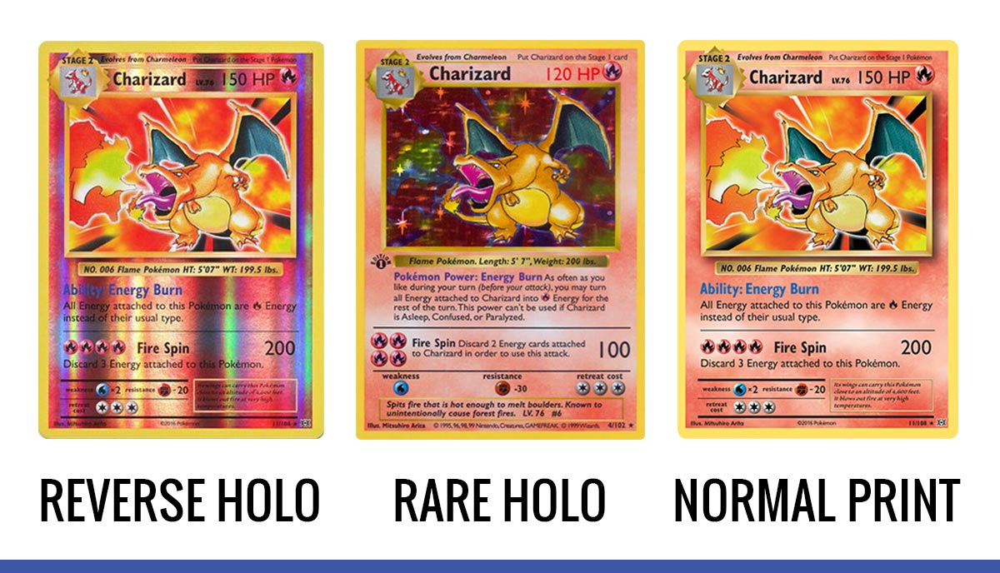

Introduction
Pika, pika, pika.
- Overview of the Pokémon Card Market Pokémon began in 1996 as a Nintendo video game franchise centered around collecting and battling Pokémon. Its popularity quickly expanded to the trading card game, turning Pokémon cards into a global collecting phenomenon. What began primarily as a children's hobby has developed into a substantial secondary market, where rare, vintage, and professionally graded cards are traded by collectors and investors. Over the past decade, that market has exploded rather than simply grown, with some cards appreciating by over 3000 percent. This growth has attracted increasing attention from investors and researchers interested in understanding the factors that drive card prices and market trends. The market has also developed many features similar to traditional financial markets, including price volatility, speculation, professional grading, and increasingly sophisticated pricing data. In early 2026, this trend reached a new milestone when a rare Pikachu Illustrator card reportedly sold for $16.49 million at auction, setting a record for the most expensive Pokémon card ever sold. The combination of rapidly increasing prices, growing participation from investors, and increasingly available market data makes the Pokémon card market an interesting setting for studying price trends and potential investment strategies.
- Common Investment Knowledge Experienced collectors generally consider several factors when evaluating whether a Pokémon card is likely to retain or increase its value. 1)**Rarity and print run** are important, as early sets, limited promotional releases, and cards with low population counts among graded copies can command significant premiums. 2)**Condition and grade** are also critical. For example, a PSA 10 ``Gem Mint'' copy can be worth many times more than a worn copy of the same card because collectors place a high value on pristine condition. 3)**Character popularity** is another major factor. Iconic Pokémon such as Charizard, Pikachu, and Mewtwo often command higher prices than equally rare cards featuring less popular Pokémon because demand is influenced by nostalgia and brand recognition as well as scarcity. 4)**Print era and historical significance** can also contribute to value. For example, first-edition and shadowless cards from the original Base Set are highly sought after because of their historical importance. Cards associated with printing errors, promotional events, or notable artwork can also carry a premium because of their unique history. For investment purposes, collectors often favor cards that combine several of these characteristics. A card supported by multiple sources of demand may be less dependent on any single factor and may therefore be more resilient to changes in market trends.
- Card Grading Business
Card grading serves as a quality-control and authentication process that transforms a raw trading card into a standardized and more easily tradeable asset.
PSA (Professional Sports Authenticator) is one of the most widely recognized grading companies for Pokémon cards.
When a card is submitted, PSA graders evaluate the alignment of the image within the borders, the sharpness and condition of the corners and edges, and surface defects such as scratches, print lines, or indentations.
PSA then assigns a numerical grade from 1 to 10, with a PSA 10 ``Gem Mint'' representing a virtually flawless card.
The grade can have a substantial effect on a card's market value because it provides a standardized assessment of condition.
A sealed, tamper-evident PSA case with a verified grade and certification number allows buyers to evaluate a card without having to inspect it in person.
This standardization is particularly important for high-value cards, which can be traded online for thousands or even tens of thousands of dollars.
The grading system has also created a market strategy commonly known as "card flipping".
Investors search through bulk collections, local card shops, garage sales, and online listings for raw cards that appear undervalued, then submit them for professional grading.
If a card receives a high grade, particularly a PSA 9 or 10, its market value can increase substantially relative to its raw price.
However, a lower-than-expected grade can reduce or even eliminate the potential profit after accounting for the purchase price and grading fees.

- Beyond the Grade: Predicting the Market Card flipping may appear to be a probability game on the surface, but investors who consistently profit from it are ultimately engaging in a market-prediction strategy rather than simply gambling on grading outcomes. Chasing cards that are already popular is often a less reliable path to profit. When a card is widely recognized as valuable, many investors compete for the same copies, and sellers can raise raw-card prices until the potential profit margin after grading becomes small. The greater opportunity may come from identifying cards before they become widely sought after. A card may gain popularity because of an upcoming set release, increased attention to a particular Pokémon in the games or anime, a competitive deck that drives demand for certain cards, or a mismatch between the card's current price, rarity, and graded population. Identifying these opportunities requires more than the ability to recognize cards with perfect margins. It requires an ongoing understanding of market trends, an understanding of which cards are likely to attract collectors, and a systematic research process for identifying cards that may currently be overlooked. In this sense, successful investors are not simply reacting to cards that are already popular. They are attempting to anticipate which cards are likely to become popular in the future and position themselves before the broader market recognizes their value.
- Hidden Patterns behind Valuable Cards: To explore the the possible strategies to discover card with good potential, the following questions are worthy to explore:
- Can you predict a card's market price from its Rarity, Supertype, Types, Set Name, Release Year, Artist, and Retreat Cost?
- What features actually drive the price? Does Rarity swamp everything else, or do Set Name and Artist matter more than expected?
- How to classify cards into tiers (bulk vs. mid-value vs. chase card)? Among the chase cards, does there exist an internal structure that can bring business values?
- Detect the anamoly cards, which prices increased or decreased over 200%, and distinguish whether it's genuine market moves from likely data errors or delisted/relisted variants?
- If the anamoly cards are genuine market moves, what are the features shared by them? Use theses features to check a card outside of the dataset, and check if this is a universal trend.
- Given a card's stats and price, can you predict its Rarity label? Mismatches between predicted and actual rarity are a good way to catch mislabeled rows.
- Aggregate to the Set Name level (rarity mix, chase-card ratio, release recency, median price) and model which set characteristics predict overall price appreciation.
- Since a card is often missing the price of Normal/Reverse Holofoil/Holofoil by design, is there a model that can estimate the "missing" variant price from the populated one(s) plus rarity/set, useful for portfolio valuation when only partial pricing exists?
Data Sets
Besides trading cards directly between friends or at local card shows, most Pokémon card transactions take place online, through platforms such as eBay and Pokémon TCG marketplaces. However, access to data from these major platforms is limited. In recent years, some major data providers have restricted or discontinued API access for individual developers, citing concerns about server load and the protection of their business models. This makes it difficult for researchers and independent developers to obtain large-scale, reliable market data directly from these platforms. Therefore, the data used in this project is sourced from [Will Sutton/ https://github.com/wjsutton/pokemon_tcg_stockmarket], which is licensed under the MIT License. Permission is hereby granted, free of charge, to any person obtaining a copy of this software and associated documentation files. The following are the data files downloaded from Will Stutton's repository:
Data Overview
The first step is to understand what kind of quantitative and quanlitative data are included in the datasets, and what are their limitations. A real rows in the data set looks like the following:
| ID | Name | Pokedex Number | Supertype | Subtypes | HP | Types | Attacks | Weaknesses | Retreat Cost | Set Name | Release Date | Artist | Rarity | Card Image (Small) | Card Image HiRes | TCG Player URL | TCG Price Date | TCG Market Price USD (Normal) | TCG Low Price USD (Normal) | TCG High Price USD (Normal) | TCG Market Price USD (Reverse Holofoil) | TCG Low Price USD (Reverse Holofoil) | TCG High Price USD (Reverse Holofoil) | TCG Market Price USD (Holofoil) | TCG Low Price USD (Holofoil) | TCG High Price USD (Holofoil) |
|---|---|---|---|---|---|---|---|---|---|---|---|---|---|---|---|---|---|---|---|---|---|---|---|---|---|---|
| base1-1 | Alakazam | 65.0 | Pokémon | Stage 2 | 80 | Psychic | Confuse Ray (30) | Psychic ×2 | 3 | Base | 1999/01/09 | Ken Sugimori | Rare Holo | image | hi-res | link | 2025/02/22 | 66.05 | 34.25 | 149.99 |
- Quanlitative Data: Pokedex Number (ID to determine which Pokémon it is), Supertype, Subtype, Types, Attacks, Weaknesses, Set Name, Release Date, Aritist, Rarity
- Quantitative Data: HP, Retreat Cost, TCG High Price USD (Normal), TCG Market Price USD (Recerse Holofoil), TCG Low Price USD (Reverse Holofoil), TCG High Price USD (Reverse Holofoil), TCG Market Price USD (Holofoil), TCG Low Price USD (Holofoil), TCG High Price USD (Holofoil)

Notice that there are a lot of missing values under the categories TCG High Price USD (Normal), TCG Market Price USD (Recerse Holofoil), TCG Low Price USD (Reverse Holofoil), TCG High Price USD (Reverse Holofoil), TCG Market Price USD (Holofoil), TCG Low Price USD (Holofoil), TCG High Price USD (Holofoil). Normal, holofoil and reverse holofoil refer to the different printing techniques of the card. Normal cards are completely flat and non-reflective, holofoil cards shine only on the artwork, and reverse holofoil cards shine everywhere except the artwork. If a card has missing value of some print, it simpliy indicates that such product doesn't exist. Since the investors can only purchase the existing product of Pokémon cards, these missing values won't affect our analysis. Also, HP/Types/Attacks are ~17-20% missing only because Trainer/Energy cards don't have them, not a data problem.
Supertypes, Types of Pokémon, and Rairity, are the major players that can impact the card prices, the following figures demonstrate the decompositioon of The quantitative data inlcudes all kind of market prices of a card, shape, dtypes, missing values| column_1 | column_2 | column_3 |
|---|---|---|
| example | example | example |
| example | example | example |
Methodology
Placeholder: outline your analysis approach step by step here.
- TODO — e.g. Data cleaning / handling missing values
- TODO — e.g. Exploratory data analysis
- TODO — e.g. Statistical test or model applied
Live Python Demo
This tab runs real Python in your browser (via Pyodide). It executes automatically the first time you open this tab.
Open this tab to run the Python code…
Results & Conclusions
Placeholder: summarize what you found and what it means.

Placeholder: conclusions and next steps.